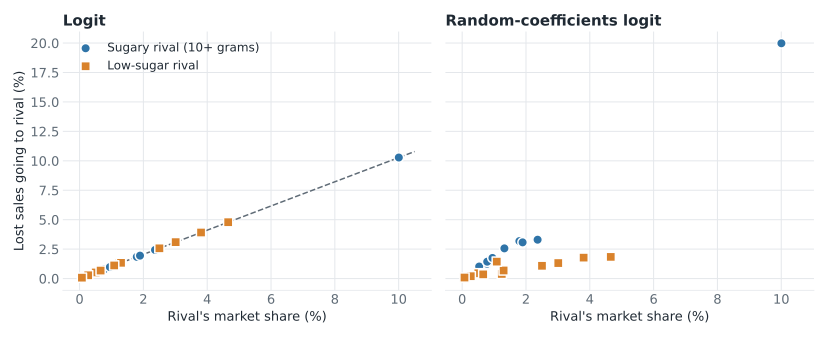

Subscripts tell the reader the level at which each term varies
One letter per dimension, used the same way throughout the paper: county, state, year
Order from the smallest unit to the largest, with time last
A term carries only the subscripts it varies over: a state policy is
A fixed effect’s subscript says what it holds constant: county, year
The outcome’s subscripts state the unit of observation: a county in a year
Reduced-form and structural approaches
A structural model recovers the parameters of behavior
Definition: any empirical model that recovers the parameters of behavioral functions, such as demand and supply equations, utility functions, or cost structures
It starts from a theoretical model and states what the researcher can and cannot observe
What cannot be observed becomes a structural error, backed out of observed behavior
The parameters are estimated with a procedure such as GMM or maximum likelihood
Production, cost, and profit functions; stochastic frontier
Returns to scale, efficiency
Firms and markets
Conduct and markups; equilibrium displacement
Markups, pass-through, incidence
Dynamics and risk
Real options; dynamic discrete choice; risk preferences and insurance demand
Value of waiting, risk aversion
Trade and policy
Structural gravity; spatial equilibrium; CGE
Trade costs, economy-wide effects
Each method has an example specification on the methods map.
BLP: one structural model
BLP addresses the large number of cross-price effects in differentiated-product demand
A log-log demand system estimates one equation for each product , with every price on the right side:
: the percent change in the quantity of when the price of rises 1 percent
With 100 products, a log-log demand system has at least 10,000 parameters
BLP describes each product by its characteristics, so the number of parameters depends on the number of characteristics
It uses market-level data on prices and quantities, and it allows for endogenous prices
Sources: Nevo (2000a), pages 514 to 515; Berry et al. (1995).
Nevo (2000): market concentration does not show how close brands are as substitutes
Empirical question: how much would prices rise if two cereal firms merged?
Traditional merger analysis: define the market, then compute a concentration measure, such as the HHI, from market shares
Limit: with differentiated products the market is hard to define, and the HHI is a reasonable guide only if products are equally spaced in their characteristics
Portfolio effect: a firm that owns two substitutes charges more than two separate firms would, because some sales lost by one brand go to the other
Nevo’s approach: estimate how much brands substitute, such as Post Grape Nuts and Nabisco Shredded Wheat, then simulate post-merger prices
Sources: Nevo (2000b); Nevo (2001), pages 307 to 308.
The theoretical model behind BLP: consumers, firms, and equilibrium
Consumers
Firms
Choice
One product, or none
Prices of their own products
Objective
Maximize utility
Maximize profit:
Take as given
Income, products, and prices
Demand, marginal costs, and rivals’ prices
Equilibrium: Bertrand-Nash; each firm’s prices are optimal given rivals’ prices, and shares equal what consumers choose at those prices
Researcher observes: market shares, prices, and product characteristics
Researcher does not observe: unobserved quality, individual tastes and shocks, and marginal cost
Sources: Berry et al. (1995), Sections 2 and 3; Nevo (2001).
A structural section states the same four choices as any empirical section
Choice
In a structural paper
Model
The primitives: preferences, technology, and how agents interact
Estimation and inference
The estimator in one paragraph, with details in an appendix
Identification
Which variation identifies which parameter
Reported results
Fit or validation, and the counterfactuals the model is used for
Model: each consumer chooses the option that gives the highest utility
: utility of consumer from product in market (a city in a quarter)
: income left after buying ; : marginal utility of income
: observed characteristics, such as sugar content
: characteristics the researcher does not observe, such as brand quality or promotions
: tastes for those characteristics; and vary across consumers
: a mean-zero shock
Buying nothing is the outside good:
Summing individual choices gives each product’s predicted market share. The data are the observed shares.
Estimation: back out the unobserved term from market shares, then use GMM
In logit, observed market shares convert into a linear regression:
: unobserved product characteristics
: individual shock
Varies by
Product and market
Consumer, product, and market
Known to
Consumers and firms, so it affects price
The consumer only
In estimation
The error term in the regression
Averaged over consumers into the share formula
Random coefficients: for each guess of the taste parameters, find the that reproduce observed shares, and choose the guess that makes uncorrelated with the instruments (GMM)
In a paper, this gets one paragraph; the steps go in an appendix (derivation notes)
Sources: Berry (1994); Nevo (2000a), pages 522 and 530 to 533.
BLP identification has two parts: the price coefficient and substitution patterns
Price coefficient
Substitution patterns
Parameters
Mean price sensitivity,
How tastes vary across consumers
Problem
Endogeneity: price is correlated with
Market shares are aggregates, so they do not show who switched to what
What identifies it
Instruments that shift price
How shares respond across products and markets
Threats
Instruments correlated with demand shocks
Too little variation in prices, characteristics, choice sets, or demographics
Only the first part is an endogeneity problem. The second concerns which variation pins down the spread of tastes.
Demo: with random coefficients, more of a sugary cereal’s lost sales go to sugary rivals

Each point is a rival cereal. Further right is a larger market share; higher is a larger part of the lost sales
Logit: the points form a line, so market share alone sets a rival’s gain
Random coefficients: sugary rivals, which share buyers, gain more than low-sugar rivals of the same size
A cereal with 14 grams of sugar, one market: sugary rivals get 22.7% in logit, 40.5% with random coefficients.
Identification of substitution patterns: compare how shares respond across products and markets
Nevo’s example: products A and B are similar, and B and C have the same market share. The price of A rises.
Logit predicts equal changes in the shares of B and C
If B gains more than C, the data favor random coefficients, and the size of the gap identifies the parameters in
Demographics: the parameters in are identified by comparing markets with different demographics
Having many markets helps when they add variation in prices, characteristics, choice sets, and demographics. Nevo’s cereal data have no variation in the choice set across markets, which he offers as a reason his estimates of are imprecise.
Numerical estimation can stop early, so report how the model was solved
Estimation searches for the parameters that minimize the GMM objective. The optimizer stops when it is close enough, and that stopping rule is a choice.
Same model, same data
Mean price coefficient
Mean own-price elasticity
Loose stopping rule (1E-4), as published
−32.4
−3.70
Tighter stopping rule (1E-5), as in our demo
−62.7
−3.62
Tighter stopping rule and better instruments
−27.5
−3.69
How to read this: the coefficient moves a lot, and the elasticity barely moves
Report the optimizer, tolerances, starting values, and integration method
Try several optimizers and starting values, and report the quantities that matter
Pairing reduced-form evidence with a structural model is good practice
A credible design shows that the response exists in the data
Reduced-form estimates can serve as inputs to the model or as targets it must reproduce
Retrospective studies check the accuracy of model predictions
Reporting why the approaches agree or disagree gives the reader more confidence than either one alone
Sources: Timmins and Schlenker (2009), Sections 1 and 4; Nevo and Whinston (2010), page 77.
What to think about when using a structural model
The question: does it require a model? Name the reason: feedback, a new policy, welfare, or distribution
The parameters: which ones does the model recover, and what variation identifies each one?
The assumptions: which ones drive the counterfactual, and how do results change under alternatives?
The reduced-form evidence: what credible estimate supports the model?
The validation: does the model predict outcomes not used to estimate it?
References
Bellemare, Marc F. 2020. How to Write Applied Papers in Economics. Working paper, University of Minnesota.
Berry, Steven T. 1994. “Estimating Discrete-Choice Models of Product Differentiation.”RAND Journal of Economics 25 (2): 242–62. https://doi.org/10.2307/2555829.
Berry, Steven, James Levinsohn, and Ariel Pakes. 1995. “Automobile Prices in Market Equilibrium.”Econometrica 63 (4): 841–90. https://doi.org/10.2307/2171802.
Conlon, Christopher, and Jeff Gortmaker. 2020. “Best Practices for Differentiated Products Demand Estimation with PyBLP.”RAND Journal of Economics 51 (4): 1108–61. https://doi.org/10.1111/1756-2171.12352.
Nevo, Aviv. 2000a. “A Practitioner’s Guide to Estimation of Random-Coefficients Logit Models of Demand.”Journal of Economics & Management Strategy 9 (4): 513–48. https://doi.org/10.1162/105864000567954.
Nevo, Aviv. 2000b. “Mergers with Differentiated Products: The Case of the Ready-to-Eat Cereal Industry.”The RAND Journal of Economics 31 (3): 395–421. https://doi.org/10.2307/2600994.
Nevo, Aviv, and Michael D. Whinston. 2010. “Taking the Dogma Out of Econometrics: Structural Modeling and Credible Inference.”Journal of Economic Perspectives 24 (2): 69–82. https://doi.org/10.1257/jep.24.2.69.
Timmins, Christopher, and Wolfram Schlenker. 2009. “Reduced-Form Versus Structural Modeling in Environmental and Resource Economics.”Annual Review of Resource Economics 1: 351–80. https://doi.org/10.1146/annurev.resource.050708.144119.